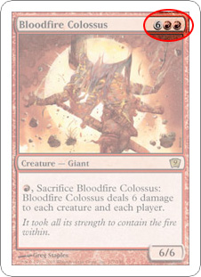

Jak hrát
- Každý hráč musí mít svůj vlastní balíček, který obsahuje alespoň 60 karet
- Stejná karta se nesmí v balíčku vyskytovat více než 4x (výjimkou jsou země)
Hráči si do ruky vezmou 7 karet z vrchu jejich balíčků. Pokud je někdo ze svými kartami nespokojený, tak si může líznout karty nové.
Pokaždé, když tak však učiní, tak si musí vzít o 1 kartu méně. Ti, kteří si karty vyměnili, se smí podívat na 1. kartu
svého balíčku a rozhodnout se zda ji chtějí umístit na vrch či spod balíčku. Této akci se přezdívá
mulligan.
Hra začíná tahem některého z hráčů, který momentálně nemá jinou možnost než vyložit zemi ze své ruky).
Země můžeme otočit o 90° a tím přidat manu stejné barvy jako je barva danné země do svého
mana poolu. Odtud ji můžeme využít k zahrání jiných druhů karet např. příšer.

Info:
Karty jiného druhu než země mají tzv. mana cost, ten ukazuje kolik
man potřebujeme k vyložení určité karty. Např. u karty Bloodfire Colossus budeme potřebovat
2 červené a 6 bezbarvých (jakýchkoliv) man. Ty znázorňuje číslo v šedém kolečku. Celkově tedy otočíme 8 zemí.
Příšery kromě svých schopností mají také své vlastní staty, které jsou
zobrazeny v pravém dolním rohu. První číslice znázorňuje útočnou sílu a druhá životy(Ty se na konci kola vždy obnoví).
K provedení útoku s příšerou ji otočíme o 90° , protihráč ji však může blokovat svými stvořeními. Poté
dojde k udělování zranění. Pokud se protihráč rozhodne, že nebude blokovat, tak poškození schytá hráč (Na začátku má každý hráč 20 životů).
S příšerami můžeme cílovat pouze ostatní hráče nebo planeswalkery, ale nikdy jiné příšery. Stvoření
bez schopnosti haste nemůžou být otočené ve stejné kolo jako jsou vyloženy.
Hráči se ve svých tazích střídají dokud:
- životy některého z hráčů klesnou na 0
- nějakému hráči dojdou karty z balíčku
- nějaká karta oznámí že hráč prohrál nebo vyhrál
- hráč má 10 a více poison counterů